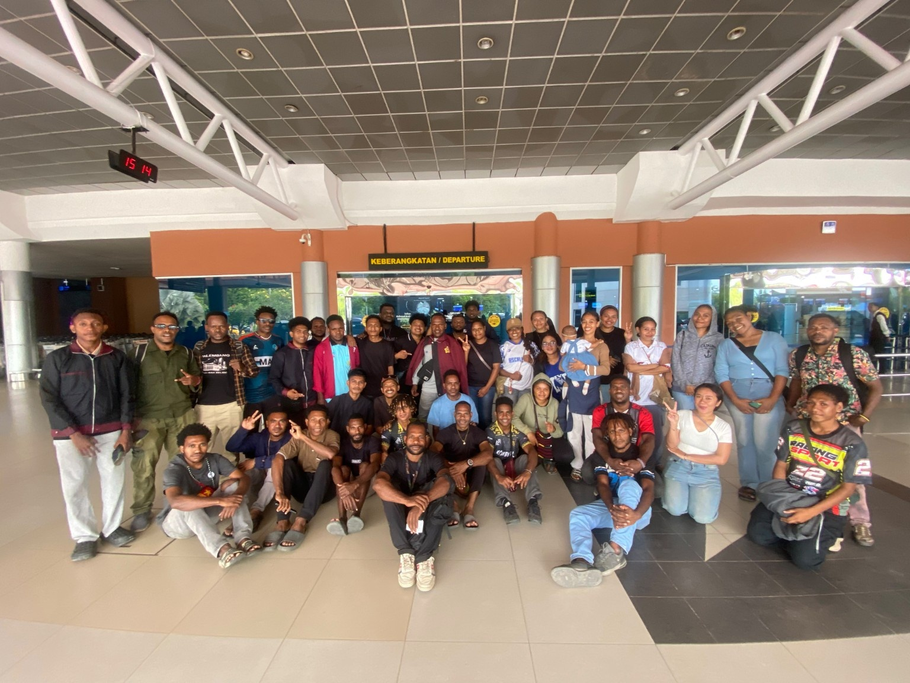

Palembang — Keluarga Besar Komunitas Mahasiswa Sriwijaya (KOMPAS) Palembang menggelar pelepasan dan pengantaran bagi salah satu tokoh penting komunitas, Tipran Yikwa, S.Kom, yang akan berangkat menuju Timika, Provinsi Papua Tengah.
Kegiatan tersebut berlangsung dalam suasana penuh kehangatan, kebersamaan, dan persaudaraan. Sejumlah anggota KOMPAS Palembang hadir untuk memberikan doa, dukungan, serta penghormatan kepada sosok yang selama ini dikenal memiliki dedikasi tinggi dalam membangun solidaritas dan semangat kekeluargaan.
Bagi keluarga besar KOMPAS Palembang, Tipran Yikwa, S.Kom bukan sekadar anggota komunitas, melainkan figur yang telah memberikan kontribusi nyata dalam memperkuat nilai-nilai persatuan, kepedulian, dan kebersamaan.
Perpisahan ini bukanlah akhir dari kebersamaan, melainkan awal dari perjalanan baru yang akan terus diiringi doa dan dukungan dari keluarga besar KOMPAS Palembang.
"Jarak dapat memisahkan tempat, namun tidak akan pernah memisahkan persaudaraan yang dibangun dengan ketulusan dan kebersamaan."